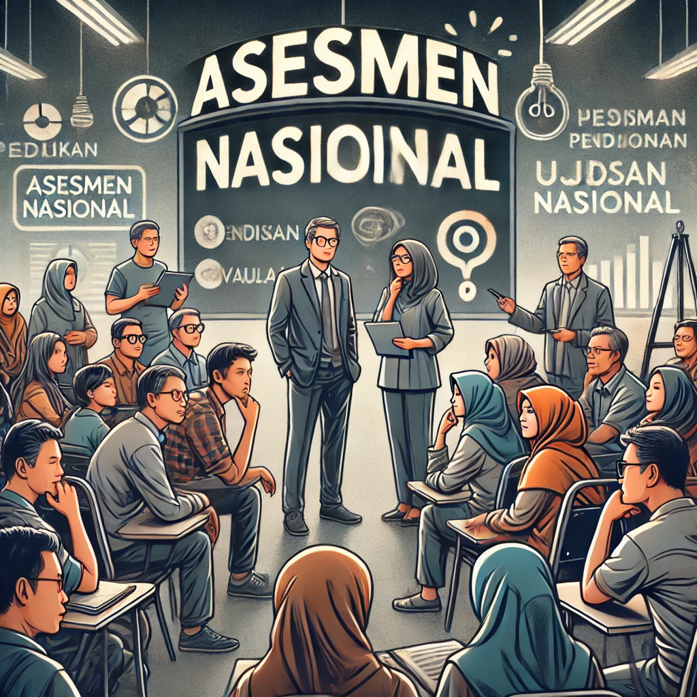
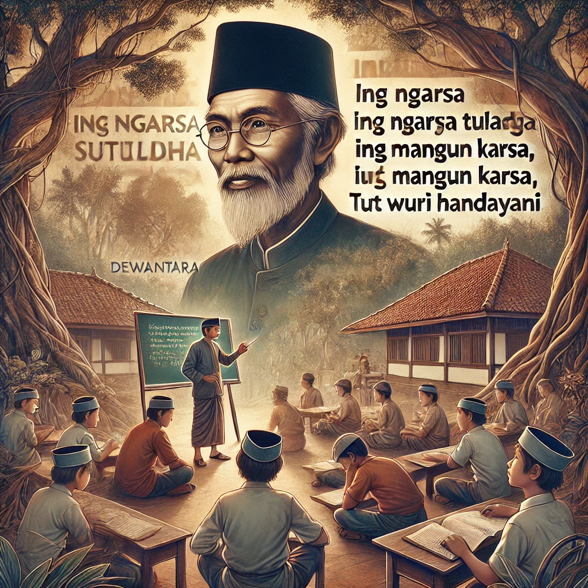

|  |
OPINI MASYARAKAT TENTANG ASESMEN NASIONAL SEBAGAI PENGANTI UJIAN NASIONAL
Asesmen merupakan suatu keputusan yang berisi data kualitatif maupun kuantitatif, data tersebut digunakan oleh seorang pendidik untuk menginformasikan kepada siswa mengenai pembelajaran yang merekan ikuti dan sebagai proses memperoleh kemampuan literasi membaca dan numerisasi. Tanpa adanya asesmen, proses pembeljaran yang dilakukan tidak akan mencapai hasil yang optimun. Baca Selengkapnya |
||
|
KONTRIBUSI IKLIM KELAS, MOTIVASI BERPRESTASI DAN PENGALAMAN PKL TERHADAP KOMPETENSI KEAHLIAN SERTA DAMPAKNYA PADA KESIAPAN KERJA PESERTA DIDIK SMK KOMPETENSI KEAHLIAN TEKNIK KOMPUTER DAN JARINGAN
Pendidikan menengah kejuruan, termasuk Sekolah Menengah Kejuruan (SMK) antara lain berfungsi untuk membekali peserta didik dengan kemampuan ilmu pengetahuan dan teknologi serta kecakapan kejuruan para profesi sesuai dengan kebutuhan masyarakat (Peraturan Pemerintah RI No. 17 Tahun 2010). Dengan kata lain, fungsi SMK yang utama adalah mengembangkan kemampuan peserta didik (siswa) untuk melaksanakan jenis pekerjaan tertentu dan untuk menyiapkan mereka memasuki lapangan kerja. Baca Selengkapnya |
|
|  |
REFLEKSI NILAI-NILAI PENDIDIKAN KI HADJAR DEWANTARA DALAM UPAYA UPAYA MENGEMBALIKAN JATI DIRI PENDIDIKAN INDONESIA
Pendidikan Indonesia dewasa ini diguncang dengan berbagai permasalahan komplek berakar yang mengakibatkan hilangnya jati diri dari pendidikan dalam konteks ke Indonesiaan. Sejumlah fenomena yang terjadi belakangan ini memberikan tamparan keras bagi pelaku pendidikan yang memberikan gambaran boboroknya nilai-nilai dan esensi dari pendidikan itu sendiri Baca Selengkapnya |
Mau kembali ke profil saya? klik disini yaa profil
Atau Mungkin Mau kembali ke pengalaman saya? pengalaman kuliah